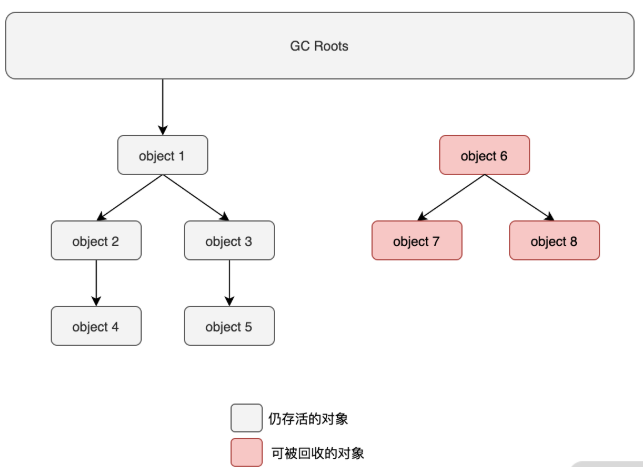
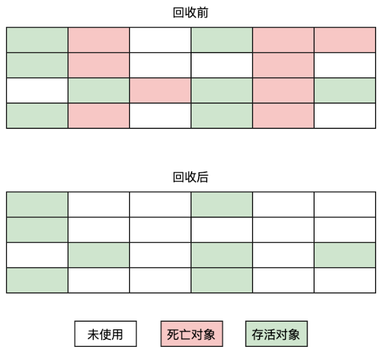
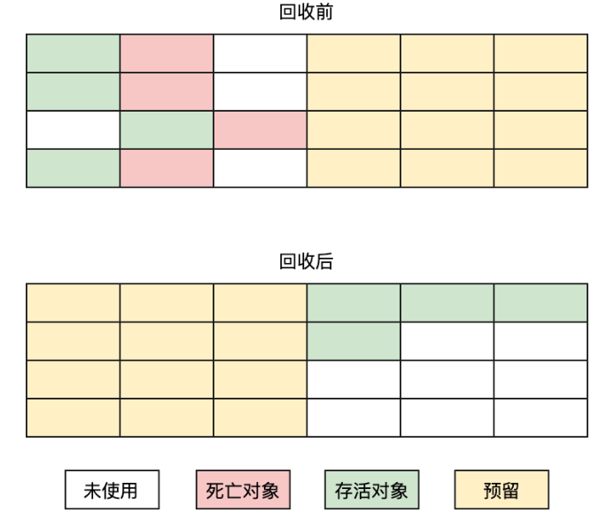
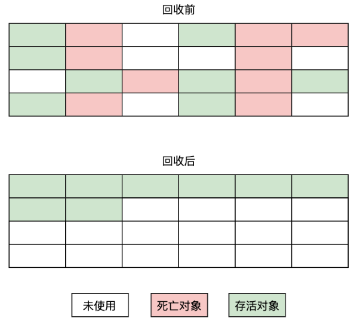
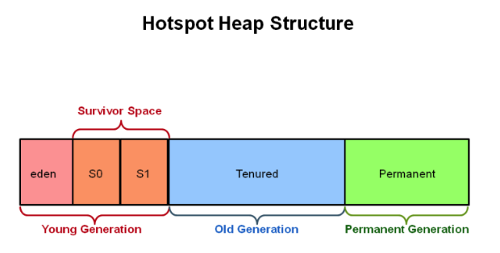
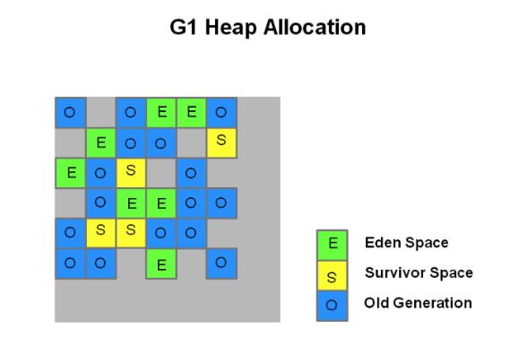

Welcome to yanliang's notes.
如何判断一个对象是否死亡？
在进行垃圾回收时，垃圾回收器首先要做的就是，判断一个对象是存活状态还是死亡状态，死亡的对象将会被标识为垃圾数据并等待收集器进行清除。
判断一个对象是否为死亡状态的常用算法有两个：
- 引用计数器算法
- 可达性分析算法。
引用计数算法（Reference Counting） 属于垃圾收集器最早的实现算法了，它是指在创建对象时关联一个与之相对应的计数器，当此对象被使用时加 1，相反销毁时 -1。当此计数器为 0 时，则表示此对象未使用，可以被垃圾收集器回收。
引用计数算法的优缺点很明显，其优点是垃圾回收比较及时，实时性比较高，只要对象计数器为 0，则可以直接进行回收操作；而缺点是无法解决循环引用的问题，比如以下代码：
1 | class CustomOne { |
即使 one 和 two 都为 null，但因为循环引用的问题，两个对象都不能被垃圾收集器所回收。
可达性分析算法（Reachability Analysis） 是目前商业系统中所采用的判断对象死亡的常用算法，这个算法的基本思想是通过一系列被称为 “GC Root” 的对象作为起点，从这些节点开始往下搜索，过程中所走过的路径称为引用链，当一个对象到 GC Root 没有任何引用链相连时，则证明此对象是不可用的。

Java 中可作为 GC Roots 的对象有哪些？
在 Java 中可以作为 GC Roots 的对象，主要包含以下几个：
- 所有被同步锁持有的对象，比如被 synchronize 持有的对象；
- 字符串常量池里的引用（String Table）；
- 类型为引用类型的静态变量；
- 虚拟机栈中引用对象；
- 本地方法栈中的引用对象。
死亡对象判断
当使用可达性分析判断一个对象不可达时，并不会直接标识这个对象为死亡状态，而是先将它标记为“待死亡”状态再进行一次校验。校验的内容就是此对象是否重写了 finalize() 方法，如果该对象重写了 finalize() 方法，那么这个对象将会被存入到 F-Queue 队列中，等待 JVM 的 Finalizer 线程去执行重写的 finalize() 方法，在这个方法中如果此对象将自己赋值给某个类变量时，则表示此对象已经被引用了。因此不能被标识为死亡状态，其他情况则会被标识为死亡状态。
以上流程对应的示例代码如下：
1 | public class FinalizeTest { |
从结果可以看出，卸载了两次对象，第一次执行了 finalize() 方法，成功地把自己从待死亡状态拉了回来；而第二次同样的代码却没有执行 finalize() 方法，从而被确认为了死亡状态，这是因为任何对象的 finalize() 方法都只会被系统调用一次。
虽然可以从 finalize() 方法中把自己从死亡状态“拯救”出来，但是不建议这样做，因为所有对象的 finalize() 方法只会执行一次。因此同样的代码可能产生的结果是不同的，这样就给程序的执行带来了很大的不确定性。
引用
无论是通过引用计数法判断对象引用数量，还是通过可达性分析法判断对象的引用链是否可达，判定对象的存活都与“引用”有关。
JDK1.2 之前，Java 中引用的定义很传统：如果 reference 类型的数据存储的数值代表的是另一块内存的起始地址，就称这块内存代表一个引用。
JDK1.2 以后，Java 对引用的概念进行了扩充，将引用分为强引用、软引用、弱引用、虚引用四种（引用强度逐渐减弱）
1．强引用（StrongReference）
以前我们使用的大部分引用实际上都是强引用，这是使用最普遍的引用（类似 Object obj = new Object()）。如果一个对象具有强引用，那就类似于必不可少的生活用品，垃圾回收器绝不会回收它。当内存空间不足，Java 虚拟机宁愿抛出 OutOfMemoryError 错误，使程序异常终止，也不会靠随意回收具有强引用的对象来解决内存不足问题。
2．软引用（SoftReference）
如果一个对象只具有软引用，那就类似于可有可无的生活用品。如果内存空间足够，垃圾回收器就不会回收它，如果内存空间不足了，就会回收这些对象的内存。只要垃圾回收器没有回收它，该对象就可以被程序使用。软引用可用来实现内存敏感的高速缓存。
3．弱引用（WeakReference）
如果一个对象只具有弱引用，那就类似于可有可无的生活用品。弱引用与软引用的区别在于：只具有弱引用的对象拥有更短暂的生命周期。在垃圾回收器线程扫描它所管辖的内存区域的过程中，一旦发现了只具有弱引用的对象，不管当前内存空间足够与否，都会回收它的内存。不过，由于垃圾回收器是一个优先级很低的线程， 因此不一定会很快发现那些只具有弱引用的对象。
4．虚引用（PhantomReference）
又称为幽灵引用或者幻影引用，一个对象是否有虚引用的存在，不会对其生存时间造成影响，也无法通过虚引用得到一个对象。
为一个对象设置虚引用关联的唯一目的就是能在这个对象被收集器回收时收到一个系统通知。
垃圾收集算法
当确定了对象的状态之后（存活还是死亡）接下来就是进行垃圾回收了，垃圾回收的常见算法有以下几个：
- 标记-清除算法
- 标记-复制算法
- 标记-整理算法
- 分代收集算法
标记-清除
（Mark-Sweep）算法属于最早的垃圾回收算法，它是由标记阶段和清除阶段构成的。标记阶段会给所有的存活对象做上标记，而清除阶段会把没有被标记的死亡对象进行回收。而标记的判断方法就是前面讲的引用计数算法和可达性分析算法。
标记-清除算法的执行流程如下图所示：

从上图可以看出，标记-清除算法有一个最大的问题就是会产生内存空间的碎片化问题，也就是说标记-清除算法执行完成之后会产生大量的不连续内存，这样当程序需要分配一个大对象时，因为没有足够的连续内存而导致需要提前触发一次垃圾回收动作。
标记-复制
算法是标记-清除算法的一个升级，使用它可以有效地解决内存碎片化的问题。它是指将内存分为大小相同的两块区域，每次只使用其中的一块区域，这样在进行垃圾回收时就可以直接将存活的东西复制到新的内存上，然后再把另一块内存全部清理掉。这样就不会产生内存碎片的问题了，其执行流程如下图所示：

标记-复制的算法虽然可以解决内存碎片的问题，但同时也带来了新的问题。因为需要将内存分为大小相同的两块内存，那么内存的实际可用量其实只有原来的一半，这样此算法导致了内存的可用率大幅降低了。
IBM公司曾有一项专门研 究对新生代“朝生夕灭”的特点做了更量化的诠释——新生代中的对象有98%熬不过第一轮收集。因此 并不需要按照1∶1的比例来划分新生代的内存空间。 在1989年，Andrew Appel针对具备“朝生夕灭”特点的对象，提出了一种更优化的半区复制分代策 略，现在称为“Appel式回收”。HotSpot虚拟机的Serial、ParNew等新生代收集器均采用了这种策略来设 计新生代的内存布局[1]。Appel式回收的具体做法是把新生代分为一块较大的Eden空间和两块较小的 Survivor空间，每次分配内存只使用Eden和其中一块Survivor。发生垃圾搜集时，将Eden和Survivor中仍 然存活的对象一次性复制到另外一块Survivor空间上，然后直接清理掉Eden和已用过的那块Survivor空间。
HotSpot虚拟机默认Eden和Survivor的大小比例是8∶1，也即每次新生代中可用内存空间为整个新 生代容量的90%（Eden的80%加上一个Survivor的10%），只有一个Survivor空间，即10%的新生代是会 被“浪费”的。当然，98%的对象可被回收仅仅是“普通场景”下测得的数据，任何人都没有办法百分百 保证每次回收都只有不多于10%的对象存活，因此Appel式回收还有一个充当罕见情况的“逃生门”的安 全设计，当Survivor空间不足以容纳一次Minor GC之后存活的对象时，就需要依赖其他内存区域（实 际上大多就是老年代）进行分配担保（Handle Promotion）。
内存的分配担保好比我们去银行借款，如果我们信誉很好，在98%的情况下都能按时偿还，于是 银行可能会默认我们下一次也能按时按量地偿还贷款，只需要有一个担保人能保证如果我不能还款 时，可以从他的账户扣钱，那银行就认为没有什么风险了。内存的分配担保也一样，如果另外一块 Survivor空间没有足够空间存放上一次新生代收集下来的存活对象，这些对象便将通过分配担保机制直 接进入老年代，这对虚拟机来说就是安全的。
标记-整理
该算法的诞生晚于标记-清除算法和标记-复制算法，它也是由两个阶段组成的：标记阶段和整理阶段。其中标记阶段和标记-清除算法的标记阶段一样，不同的是后面的一个阶段，标记-整理算法的后一个阶段不是直接对内存进行清除，而是把所有存活的对象移动到内存的一端，然后清理掉边界以外的内存，执行流程图如下图所示：

分代收集
根据对象生命周期的不同将内存划分为几块。一般将Java堆分为老年代和新生代，这样就可以根据各个年代的不同，选择不同的垃圾收集算法。
比如在新生代中，每次收集都会有大量对象死去，所以可以选择复制算法，只需要付出少量对象的复制成本就可以完成每次垃圾收集。而老年代的对象存活几率是比较高的，而且没有额外的空间对它进行分配担保，所以我们必须选择“标记-清除”或“标记-整理”算法进行垃圾收集。
方法区的回收
因为方法区主要存放永久代对象，而永久代对象的回收率比新生代低很多，所以在方法区上进行回收性价比不高。
主要是对常量池的回收和对类的卸载。
为了避免内存溢出，在大量使用反射和动态代理的场景都需要虚拟机具备类卸载功能。
类的卸载条件很多，需要满足以下三个条件，并且满足了条件也不一定会被卸载：
- 该类所有的实例都已经被回收，此时堆中不存在该类的任何实例。
- 加载该类的 ClassLoader 已经被回收。
- 该类对应的 Class 对象没有在任何地方被引用，也就无法在任何地方通过反射访问该类方法。
内存分配与回收
Minor GC 和 Full GC
- Minor GC：回收新生代，因为新生代对象存活时间很短，因此 Minor GC 会频繁执行，执行的速度一般也会比较快。
- Full GC：回收老年代和新生代，老年代对象其存活时间长，因此 Full GC 很少执行，执行速度会比 Minor GC 慢很多。
内存分配策略
1. 对象优先在 Eden 分配
大多数情况下，对象在新生代 Eden 上分配，当 Eden 空间不够时，发起 Minor GC。
2. 大对象直接进入老年代
大对象是指需要连续内存空间的对象，最典型的大对象是那种很长的字符串以及数组。
经常出现大对象会提前触发垃圾收集以获取足够的连续空间分配给大对象。
-XX:PretenureSizeThreshold，大于此值的对象直接在老年代分配，避免在 Eden 和 Survivor 之间的大量内存复制。
3. 长期存活的对象进入老年代
为对象定义年龄计数器，对象在 Eden 出生并经过 Minor GC 依然存活，将移动到 Survivor 中，年龄就增加 1 岁，增加到一定年龄则移动到老年代中。
-XX:MaxTenuringThreshold 用来定义年龄的阈值。
4. 动态对象年龄判定
虚拟机并不是永远要求对象的年龄必须达到 MaxTenuringThreshold 才能晋升老年代，如果在 Survivor 中相同年龄所有对象大小的总和大于 Survivor 空间的一半，则年龄大于或等于该年龄的对象可以直接进入老年代，无需等到 MaxTenuringThreshold 中要求的年龄。
5. 空间分配担保
在发生 Minor GC 之前，虚拟机先检查老年代最大可用的连续空间是否大于新生代所有对象总空间，如果条件成立的话，那么 Minor GC 可以确认是安全的。
如果不成立的话虚拟机会查看 HandlePromotionFailure 的值是否允许担保失败，如果允许那么就会继续检查老年代最大可用的连续空间是否大于历次晋升到老年代对象的平均大小，如果大于，将尝试着进行一次 Minor GC；如果小于，或者 HandlePromotionFailure 的值不允许冒险，那么就要进行一次 Full GC。
Full GC 触发条件
对于 Minor GC，其触发条件非常简单，当 Eden 空间满时，就将触发一次 Minor GC。而 Full GC 则相对复杂，有以下条件：
1. 调用 System.gc()
只是建议虚拟机执行 Full GC，但是虚拟机不一定真正去执行。不建议使用这种方式，而是让虚拟机管理内存。
2. 老年代空间不足
老年代空间不足的常见场景为前文所讲的大对象直接进入老年代、长期存活的对象进入老年代等。
为了避免以上原因引起的 Full GC，应当尽量不要创建过大的对象以及数组。除此之外，可以通过 -Xmn 虚拟机参数调大新生代的大小，让对象尽量在新生代被回收掉，不进入老年代。还可以通过 -XX:MaxTenuringThreshold 调大对象进入老年代的年龄，让对象在新生代多存活一段时间。
3. 空间分配担保失败
使用复制算法的 Minor GC 需要老年代的内存空间作担保，如果担保失败会执行一次 Full GC。
4. JDK 1.7 及以前的永久代空间不足
在 JDK 1.7 及以前，HotSpot 虚拟机中的方法区是用永久代实现的，永久代中存放的为一些 Class 的信息、常量、静态变量等数据。
当系统中要加载的类、反射的类和调用的方法较多时，永久代可能会被占满，在未配置为采用 CMS GC 的情况下也会执行 Full GC。如果经过 Full GC 仍然回收不了，那么虚拟机会抛出 java.lang.OutOfMemoryError。
为避免以上原因引起的 Full GC，可采用的方法为增大永久代空间或转为使用 CMS GC。
5. Concurrent Mode Failure
执行 CMS GC 的过程中同时有对象要放入老年代，而此时老年代空间不足（可能是 GC 过程中浮动垃圾过多导致暂时性的空间不足），便会报 Concurrent Mode Failure 错误，并触发 Full GC。
垃圾收集器
Serial 收集器
Serial 收集器是最早出现的一个收集器，作用于新生代。采用 标记-复制 算法.该收集器是一个单线程工作的收集器，单线程体现在两个方面：
只会使用一个处理器或者一条收集线程去完成垃圾收集工作
它在进行垃圾收集时，必须暂停其他线程。Stop The World
Serial 收集器的特点是简单和高效，并且本身的运行对内存要求不高，因此它在客户端模式下使用的比较多。
对于单核处理器或者处理器核心数较少的环境来说，Serial没有线程交互的开销，所以效率较高。
Serial Old 收集器
Serial Old是Serial收集器的老年代版本，它同样是一个单线程收集器，使用 标记-整理 算法。
这个收集器的主要意义也是供客户端模式下的HotSpot虚拟机使用。
如果在服务端模式下，它也可能有两种用途：
- 一种是在JDK 5以及之前的版本中与Parallel Scavenge收集器搭配使用
- 另外一种就是作为CMS收集器发生失败时的后备预案，在并发收集发生Concurrent Mode Failure时使用。
ParNew 收集器
ParNew收集器实质上是Serial收集器的多线程并行版本，采用 标记 - 复制 算法。除了同时使用多条线程进行垃圾收集之外，其余的行为包括Serial收集器可用的所有控制参数（例如：-XX：SurvivorRatio、-XX：PretenureSizeThreshold、-XX：HandlePromotionFailure等）、收集算法、Stop The World、对象分配规则、回收策略等都与Serial收集器完全一致，在实现上这两种收集器也共用了相当多的代码。
在JDK 5中使用CMS来收集老年代的时候，新生代只能选择ParNew或者Serial收集器中的一个。ParNew收集器是激活CMS后（使用-XX：+UseConcMarkSweepGC选项）的默认新生代收集器，也可以使用-XX：+/-UseParNewGC选项来强制指定或者禁用它。
ParNew对于垃圾收集时系统资源的高效利用还是很有好处的。它默认开启的收集线程数与处理器核心数量相同，在处理器核心非常多（譬如32个，现在CPU都是多核加超线程设计，服务器达到或超过32个逻辑核心的情况非常普遍）的环境中，可以使用-XX：ParallelGCThreads参数来限制垃圾收集的线程数。
Parallel Scavenge 收集器
吞吐量优先收集器
Parallel Scavenge收集器 和 ParNew 收集器一样也是一款新生代收集器，它同样是基于 标记-复制 算法实现的收集器，也是能够并行收集的多线程收集器。
但它与 ParNew 收集器不同之处在于 Parallel Scavenge 收集器的特点是它的关注点与其他收集器不同，CMS等收集器的关注点是尽可能地缩短垃圾收集时用户线程的停顿时间，而Parallel Scavenge收集器的目标则是达到一个可控制的吞吐量（Throughput）。所谓吞吐量就是处理器用于运行用户代码的时间与处理器总消耗时间的比值：
吞吐量 = 运行用户代码时间 / （运行用户代码时间 + 运行垃圾收集时间）
Parallel Scavenge收集器提供了两个参数用于精确控制吞吐量，分别是：
控制最大垃圾收集停顿时间的-XX：MaxGCPauseMillis参数
设置吞吐量大小的-XX：GCTimeRatio参数。
-XX：MaxGCPauseMillis参数允许的值是一个大于0的毫秒数，收集器将尽力保证内存回收花费的时间不超过用户设定值。（该值并不是越小越好）垃圾收集停顿时间缩短是以牺牲吞吐量和新生代空间为代价换取的：系统把新生代调得小一些，收集300MB新生代肯定比收集500MB快，但这也直接导致垃圾收集发生得更频繁，原来10秒收集一次、每次停顿100毫秒，现在变成5秒收集一次、每次停顿70毫秒。停顿时间的确在下降，但吞吐量也降下来了。
-XX：GCTimeRatio参数的值则应当是一个大于0小于100的整数，也就是垃圾收集时间占总时间的比率，相当于吞吐量的倒数。譬如把此参数设置为19，那允许的最大垃圾收集时间就占总时间的5%（即1/(1+19)），默认值为99，即允许最大1%（即1/(1+99)）的垃圾收集时间。
Parallel Scavenge收集器还有一个参数-XX：+UseAdaptiveSizePolicy值得我们关注。这是一个开关参数，当这个参数被激活之后，就不需要人工指定新生代的大小（-Xmn）、Eden与Survivor区的比例（-XX：SurvivorRatio）、晋升老年代对象大小（-XX：PretenureSizeThreshold）等细节参数了，虚拟机会根据当前系统的运行情况收集性能监控信息，动态调整这些参数以提供最合适的停顿时间或者最大的吞吐量。这种调节方式称为垃圾收集的自适应的调节策略（GC Ergonomics）。
自适应调节策略也是Parallel Scavenge收集器区别于ParNew收集器的一个重要特性。
Parallel Old
Parallel Old是Parallel Scavenge收集器的老年代版本，支持多线程并发收集，基于 标记-整理 算法实现。这个收集器是直到JDK 6时才开始提供的。
经常和 Parallel Scavenge收集器配合使用，在注重吞吐量或者处理器资源较为稀缺的场合，都可以优先考虑Parallel Scavenge加Parallel Old收集器这个组合。
CMS
CMS（Concurrent Mark Sweep）收集器是一种以获取最短回收停顿时间为目标的收集器。
主要希望系统停顿时间尽可能短，以给用户带来良好的交互体验B/S系统的服务端。
CMS收集器是基于 标记-清除 算法实现的，它的运作过程相对于前面几种收集器来说要更复杂一些，整个过程分为四个步骤，包括：
- 初始标记（CMS initial mark）
- 并发标记（CMS concurrent mark）
- 重新标记（CMS remark）
- 并发清除（CMS concurrent sweep）
其中初始标记、重新标记这两个步骤仍然需要“Stop The World”。
初始标记 仅仅只是标记一下GCRoots能直接关联到的对象，速度很快；
并发标记 阶段就是从GC Roots的直接关联对象开始遍历整个对象图的过程，这个过程耗时较长但是不需要停顿用户线程，可以与垃圾收集线程一起并发运行；
重新标记 阶段则是为了修正并发标记期间，因用户程序继续运作而导致标记产生变动的那一部分对象的标记记录，这个阶段的停顿时间通常会比初始标记阶段稍长一些，但也远比并发标记阶段的时间短；
并发清除 阶段，清理删除掉标记阶段判断的已经死亡的对象，由于不需要移动存活对象，所以这个阶段也是可以与用户线程同时并发的。
由于在整个过程中耗时最长的并发标记和并发清除阶段中，垃圾收集器线程都可以与用户线程一起工作，所以从总体上来说，CMS收集器的内存回收过程是与用户线程一起并发执行的。
优缺点
优点：并发收集、低停顿。并发低停顿收集器
缺点：
- CMS收集器对处理器资源非常敏感
- 无法处理浮动垃圾
- 会出现大量空间碎片
对缺点的具体阐述：
CMS收集器对处理器资源非常敏感。事实上，面向并发设计的程序都对处理器资源比较敏感。在并发阶段，它虽然不会导致用户线程停顿，但却会因为占用了一部分线程（或者说处理器的计算能力）而导致应用程序变慢，降低总吞吐量。CMS默认启动的回收线程数是（处理器核心数量+3）/4，也就是说，如果处理器核心数在四个或以上，并发回收时垃圾收集线程只占用不超过25%的处理器运算资源，并且会随着处理器核心数量的增加而下降。但是当处理器核心数量不足四个时，CMS对用户程序的影响就可能变得很大。如果应用本来的处理器负载就很高，还要分出一半的运算能力去执行收集器线程，就可能导致用户程序的执行速度忽然大幅降低。为了缓解这种情况，虚拟机提供了一种称为“增量式并发收集器”（Incremental Concurrent Mark Sweep/i-CMS）的CMS收集器变种，所做的事情和以前单核处理器年代PC机操作系统靠抢占式多任务来模拟多核并行多任务的思想一样，是在并发标记、清理的时候让收集器线程、用户线程交替运行，尽量减少垃圾收集线程的独占资源的时间，这样整个垃圾收集的过程会更长，但对用户程序的影响就会显得较少一些，直观感受是速度变慢的时间更多了，但速度下降幅度就没有那么明显。实践证明增量式的CMS收集器效果很一般，从JDK 7开始，i-CMS模式已经被声明为“deprecated”，即已过时不再提倡用户使用，到JDK 9发布后iCMS模式被完全废弃。
CMS收集器无法处理“浮动垃圾”（Floating Garbage），有可能出现“Con-current ModeFailure”失败进而导致另一次完全“Stop The World”的Full GC的产生。在CMS的并发标记和并发清理阶段，用户线程是还在继续运行的，程序在运行自然就还会伴随有新的垃圾对象不断产生，但这一部分垃圾对象是出现在标记过程结束以后，CMS无法在当次收集中处理掉它们，只好留待下一次垃圾收集时再清理掉。这一部分垃圾就称为“浮动垃圾”。同样也是由于在垃圾收集阶段用户线程还需要持续运行，那就还需要预留足够内存空间提供给用户线程使用，因此CMS收集器不能像其他收集器那样等待到老年代几乎完全被填满了再进行收集，必须预留一部分空间供并发收集时的程序运作使用。在JDK5的默认设置下，CMS收集器当老年代使用了68%的空间后就会被激活，这是一个偏保守的设置，如果在实际应用中老年代增长并不是太快，可以适当调高参数-XX：CMSInitiatingOccu-pancyFraction的值来提高CMS的触发百分比，降低内存回收频率，获取更好的性能。到了JDK 6时，CMS收集器的启动阈值就已经默认提升至92%。但这又会更容易面临另一种风险：要是CMS运行期间预留的内存无法满足程序分配新对象的需要，就会出现一次“并发失败”（Concurrent Mode Failure），这时候虚拟机将不得不启动后备预案：冻结用户线程的执行，临时启用Serial Old收集器来重新进行老年代的垃圾收集，但这样停顿时间就很长了。所以参数-XX：CMSInitiatingOccupancyFraction设置得太高将会很容易导致大量的并发失败产生，性能反而降低，用户应在生产环境中根据实际应用情况来权衡设置。
CMS是一款基于“标记-清除”算法实现的收集器，如果读者对前面这部分介绍还有印象的话，就可能想到这意味着收集结束时会有大量空间碎片产生。空间碎片过多时，将会给大对象分配带来很大麻烦，往往会出现老年代还有很多剩余空间，但就是无法找到足够大的连续空间来分配当前对象，而不得不提前触发一次Full GC的情况。为了解决这个问题，CMS收集器提供了一个-XX：+UseCMS-CompactAtFullCollection开关参数（默认是开启的，此参数从JDK 9开始废弃），用于在CMS收集器不得不进行Full GC时开启内存碎片的合并整理过程，由于这个内存整理必须移动存活对象，（在Shenandoah和ZGC出现前）是无法并发的。这样空间碎片问题是解决了，但停顿时间又会变长，因此虚拟机设计者们还提供了另外一个参数-XX：CMSFullGCsBeforeCompaction（此参数从JDK 9开始废弃），这个参数的作用是要求CMS收集器在执行过若干次（数量由参数值决定）不整理空间的Full GC之后，下一次进入Full GC前会先进行碎片整理（默认值为0，表示每次进入Full GC时都进行碎片整理）。
G1 收集器
G1是一款主要面向服务端应用的垃圾收集器。全功能的垃圾收集器”（Fully-Featured Garbage Collector）
在G1收集器出现之前的所有其他收集器，包括CMS在内，垃圾收集的目标范围要么是整个新生代（Minor GC），要么就是整个老年代（Major GC），再要么就是整个Java堆（Full GC）。而G1跳出了这个樊笼，它可以面向堆内存任何部分来组成回收集（Collection Set，一般简称CSet）进行回收，衡量标准不再是它属于哪个分代，而是哪块内存中存放的垃圾数量最多，回收收益最大，这就是G1收集器的Mixed GC模式。

虽然G1也仍是遵循分代收集理论设计的，但其堆内存的布局与其他收集器有非常明显的差异：G1不再坚持固定大小以及固定数量的分代区域划分，而是把连续的Java堆划分为多个大小相等的独立区域（Region），每一个Region都可以根据需要，扮演新生代的Eden空间、Survivor空间，或者老年代空间。收集器能够对扮演不同角色的Region采用不同的策略去处理，这样无论是新创建的对象还是已经存活了一段时间、熬过多次收集的旧对象都能获取很好的收集效果。
Region中还有一类特殊的Humongous区域，专门用来存储大对象。G1认为只要大小超过了一个Region容量一半的对象即可判定为大对象。每个Region的大小可以通过参数-XX：G1HeapRegionSize设定，取值范围为1MB～32MB，且应为2的N次幂。而对于那些超过了整个Region容量的超级大对象，将会被存放在N个连续的Humongous Region之中，G1的大多数行为都把Humongous Region作为老年代的一部分来进行看待。
虽然G1仍然保留新生代和老年代的概念，但新生代和老年代不再是固定的了，它们都是一系列区 域（不需要连续）的动态集合。G1收集器之所以能建立可预测的停顿时间模型，是因为它将Region作 为单次回收的最小单元，即每次收集到的内存空间都是Region大小的整数倍，这样可以有计划地避免 在整个Java堆中进行全区域的垃圾收集。更具体的处理思路是让G1收集器去跟踪各个Region里面的垃 圾堆积的“价值”大小，价值即回收所获得的空间大小以及回收所需时间的经验值，然后在后台维护一 个优先级列表，每次根据用户设定允许的收集停顿时间（使用参数-XX：MaxGCPauseMillis指定，默 认值是200毫秒），优先处理回收价值收益最大的那些Region，这也就是“Garbage First”名字的由来。 这种使用Region划分内存空间，以及具有优先级的区域回收方式，保证了G1收集器在有限的时间内获 取尽可能高的收集效率。

G1收集器的 运作过程大致可划分为以下四个步骤： ·
初始标记（Initial Marking）：仅仅只是标记一下GC Roots能直接关联到的对象，并且修改TAMS 指针的值，让下一阶段用户线程并发运行时，能正确地在可用的Region中分配新对象。这个阶段需要 停顿线程，但耗时很短，而且是借用进行Minor GC的时候同步完成的，所以G1收集器在这个阶段实际 并没有额外的停顿。
并发标记（Concurrent Marking）：从GC Root开始对堆中对象进行可达性分析，递归扫描整个堆 里的对象图，找出要回收的对象，这阶段耗时较长，但可与用户程序并发执行。当对象图扫描完成以 后，还要重新处理SATB记录下的在并发时有引用变动的对象。
最终标记（Final Marking）：对用户线程做另一个短暂的暂停，用于处理并发阶段结束后仍遗留 下来的最后那少量的SATB记录。
筛选回收（Live Data Counting and Evacuation）：负责更新Region的统计数据，对各个Region的回 收价值和成本进行排序，根据用户所期望的停顿时间来制定回收计划，可以自由选择任意多个Region 构成回收集，然后把决定回收的那一部分Region的存活对象复制到空的Region中，再清理掉整个旧 Region的全部空间。这里的操作涉及存活对象的移动，是必须暂停用户线程，由多条收集器线程并行 完成的。
从上述阶段的描述可以看出，G1收集器除了并发标记外，其余阶段也是要完全暂停用户线程的，
新生代分为几个区？使用什么算法进行垃圾回收？为什么使用这个算法？
（1）新生代分区：Eden、From Survivor、To Survivor，大小比例为：8：1：1；
To Survivor：保留的是MinorGC的幸存者；
From Survivor：保留的是上次GC的幸存者，在这次作为被扫描者；
（2）使用复制算法；
（3）因为复制算法的实现，导致复制算法适用于对象较少的情况下，当Eden区的内存被填满，会触发minorGC ，Eden区对象会从Eden转移到Survivor区，随着年龄的增加再到老年代。
你用过哪些垃圾回收器？他们有什么区别？
HotSpot 中使用的垃圾收集器主要包括 7 个：Serial、ParNew、Parallel Scavenge、Serial Old、Parallel Old、CMS 和 G1（Garbage First）收集器。
其中 Serial 收集器属于最早期的垃圾收集器。它是单线程运行的垃圾收集器，其单线程是指在进行垃圾回收时所有的工作线程必须暂停，直到垃圾回收结束为止。
Serial 收集器的特点是简单和高效，并且本身的运行对内存要求不高，因此它在客户端模式下使用的比较多。
ParNew 收集器实际上是 Serial 收集器的多线程并行版本。
Parallel Scavenge 收集器和 ParNew 收集器类似，它也是一个并行运行的垃圾回收器；不同的是，该收集器关注的侧重点是实现一个可以控制的吞吐量。而这个吞吐量计算的也很奇怪，它的计算公式是：用户运行代码的时间 / （用户运行代码的时间 + 垃圾回收执行的时间）。比如用户运行的时间是 8 分钟，垃圾回收运行的时间是 2 分钟，那么吞吐量就是 80%。Parallel Scavenge 收集器追求的目标就是将这个吞吐量的值，控制在一定的范围内。
Parallel Scavenge 收集器有两个重要的参数：
-XX:MaxGCPauseMillis 参数：它是用来控制垃圾回收的最大停顿时间；
-XX:GCTimeRatio 参数：它是用来直接设置吞吐量的值的。
Serial Old 收集器为 Serial 收集器的老年代版本，而 Parallel Old 收集器是 Parallel Scavenge 收集器的老年代版本。
CMS（Concurrent Mark Sweep）收集器与以吞吐量为目标的 Parallel Scavenge 收集器不同，它强调的是提供最短的停顿时间，因此可能会牺牲一定的吞吐量。它主要应用在 Java Web 项目中，它满足了系统需要短时间停顿的要求，以此来提高用户的交互体验。
Garbage First（简称 G1）对比其他垃圾收集器，它是一款更先进的垃圾收集器，主要面向服务端应用的垃圾收集器。它将内存划分为多个 Region 分区，回收时则以分区为单位进行回收，这样它就可以用相对较少的时间优先回收包含垃圾最多区块。从 JDK 9 之后也成了官方默认的垃圾收集器，官方也推荐使用 G1 来代替选择 CMS 收集器。
生产环境如何排除和优化 JVM？
如果是在生产环境中直接排查 JVM 的话，最简单的做法就是使用 JDK 自带的 6 个非常实用的命令行工具来排查。它们分别是：jps、jstat、jinfo、jmap、jhat 和 jstack，它们都位于 JDK 的 bin 目录下，可以使用命令行工具直接运行。
jps
jps（JVM Process Status tool，虚拟机进程状况工具）它的功能和 Linux 中的 ps 命令比较类似，用于列出正在运行的 JVM 的 LVMID（Local Virtual Machine IDentifier，本地虚拟机唯一 ID），以及 JVM 的执行主类、JVM 启动参数等信息。语法如下：
1 | jps [options] [hostid]常用的 options 选项： |
l：用于输出运行主类的全名，如果是 jar 包，则输出 jar 包的路径；
q：用于输出 LVMID（Local Virtual Machine Identifier，虚拟机唯一 ID）；
m：用于输出虚拟机启动时传递给主类 main() 方法的参数；
v：用于输出启动时的 JVM 参数。
使用实例：
1 | ➜ jps -l |
jstat
jstat（JVM Statistics Monitoring Tool，虚拟机统计信息监视工具）用于监控虚拟机的运行状态信息。
例如，我们用它来查询某个 Java 进程的垃圾收集情况，示例如下：
1 | ➜ jstat -gc 43704 |
参数说明如下表所示：
| 参数 | 说明 |
|---|---|
| S0C | 年轻代中第一个存活区的大小 |
| S1C | 年轻代中第二个存活区的大小 |
| S0U | 年轻代中第一个存活区已使用的空间（字节） |
| S1U | 年轻代中第二个存活区已使用的空间（字节） |
| EC | Edem 区大小 |
| EU | 年轻代中 Edem 区已使用的空间（字节） |
| OC | 老年代大小 |
| OU | 老年代已使用的空间（字节） |
| YGC | 从应用程序启动到采样时 young gc 的次数 |
| YGCT | 从应用程序启动到采样时 young gc 的所用的时间（s） |
| FGC | 从应用程序启动到采样时 full gc 的次数 |
| FGCT | 从应用程序启动到采样时 full gc 的所用的时间 |
| GCT | 从应用程序启动到采样时整个 gc 所用的时间 |
注意：年轻代的 Edem 区满了会触发 young gc，老年代满了会触发 old gc。full gc 指的是清除整个堆，包括 young 区 和 old 区。
jstat 常用的查询参数有：
- -class，查询类加载器信息；
- -compiler，JIT 相关信息；
- -gc，GC 堆状态；
- -gcnew，新生代统计信息；
- -gcutil，GC 堆统计汇总信息。
jinfo
jinfo（Configuration Info for Java）用于查看和调整虚拟机各项参数。语法如下：
1 | jinfo <option> <pid> |
查看 JVM 参数示例如下：
1 | ➜ jinfo -flags 45129 |
其中 45129 是使用 jps 查询的 LVMID。
我们可以通过 jinfo -flag [+/-]name 来修改虚拟机的参数值，比如下面的示例：
1 | ➜ jinfo -flag PrintGC 45129 # 查询是否开启 GC 打印 |
jmap（堆快照生成工具）
jmap（Memory Map for Java）用于查询堆的快照信息。
查询堆信息示例如下：
1 | ➜ jmap -heap 45129 |
我们也可以直接生成堆快照文件，示例如下：
1 | ➜ jmap -dump:format=b,file=/Users/admin/Documents/2020.dump 47380 |
jhat（堆快照分析功能）
jhat（JVM Heap Analysis Tool，堆快照分析工具）和 jmap 搭配使用，用于启动一个 web 站点来分析 jmap 生成的快照文件。
执行示例如下：
1 | jhat /Users/admin/Documents/2020.dump |
上述信息表示 jhat 启动了一个 http 的服务器端口为 7000 的站点来展示信息，此时我们在浏览器中输入：http://localhost:7000/，会看到详细信息
jstack（查询虚拟机当前的线程快照信息）
jstack（Stack Trace for Java）用于查看当前虚拟机的线程快照，用它可以排查线程的执行状况，例如排查死锁、死循环等问题。
比如，我们先写一段死锁的代码：
1 | public class NativeOptimize { |
此时我们使用 jstack 工具打印一下当前线程的快照信息，结果如下：
1 | ➜ bin jstack -l 50016 |
从上述信息可以看出使用 jstack ，可以很方便地排查出代码中出现“deadlock”（死锁）的问题。
可视化排查工具
JVM 除了上面的 6 个基础命令行工具之外，还有两个重要的视图调试工具，即 JConsole 和 JVisualVM，它们相比于命令行工具使用更方便、操作更简单、结果展现也更直观。
JConsole 和 JVisualVM 都位于 JDK 的 bin 目录下。
JConsole（Java Monitoring and Management Console）是最早期的视图调试工具。可以看出我们可以用它来连接远程的服务器，或者是直接调试本机，这样就可以在不消耗生产环境的性能下，从本机启动 JConsole 来连接服务器。使用 JConsole 可以监控线程、CPU、类、堆以及 VM 的相关信息，同样我们可以通过线程这一页的信息，发现之前我们故意写的死锁问题。
JVisualVM 除了包含了 JConsole 的信息之外，还有更多的详细信息，并且更加智能。
JVM 调优
JVM 调优主要是根据实际的硬件配置信息重新设置 JVM 参数来进行调优的，例如，硬件的内存配置很高，但 JVM 因为是默认参数，所以最大内存和初始化堆内存很小，这样就不能更好地利用本地的硬件优势了。因此，需要调整这些参数，让 JVM 在固定的配置下发挥最大的价值。
JVM 常见调优参数包含以下这些：
- -Xmx，设置最大堆内存大小；
- -Xms，设置初始堆内存大小；
- -XX:MaxNewSize，设置新生代的最大内存；
- -XX:MaxTenuringThreshold，设置新生代对象经过一定的次数晋升到老生代；
- -XX:PretrnureSizeThreshold，设置大对象的值，超过这个值的对象会直接进入老生代；
- -XX:NewRatio，设置分代垃圾回收器新生代和老生代内存占比；
- -XX:SurvivorRatio，设置新生代 Eden、Form Survivor、To Survivor 占比。
我们要根据自己的业务场景和硬件配置来设置这些值。例如，当我们的业务场景会有很多大的临时对象产生时，因为这些大对象只有很短的生命周期，因此需要把“-XX:MaxNewSize”的值设置的尽量大一些，否则就会造成大量短生命周期的大对象进入老生代，从而很快消耗掉了老生代的内存，这样就会频繁地触发 full gc，从而影响了业务的正常运行。
线上发送频繁full GC如何处理？ cpu使用率过高怎么办？
请介绍一下JVM内存模型？
用过什么垃圾回收器，都说说呗
讲讲类加载机制呗？ 都有哪些类加载器？ 这些类加载器都加载那些文件？
手写一个类加载Demo
classForName（“java.lang.String”） 和 String classgetClassLoader() LoadClass（“java.lang.String”） 有什么区别？
ygc 和 fgc 发生的具体场景？
jstack jmap jutil分别的意义？如何线上排查JVM的问题？
你做过哪些JVM优化，使用的方法达到什么效果？